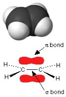
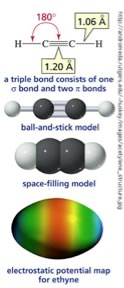

| Chapter 4.3: Double
and triple bonds |
|
So far, we have considered what are known as single bonds - that is, all the C–C and C–H bonds in alkanes, and all the bonds in diamond. Each single bond involves two (and only two) electrons that are described by a bonding molecular orbital. In such a bonding ?orbital, most of the electron density is located between the two bonded atoms in a linear sigma (σ) bond. |
4.1 Heterogeneous compounds |
We have, however, already discussed (albeit briefly),
bonds that involve more than one pair of electrons, namely those
found in graphite. Recall that for graphite and graphene, the bonds
between carbon atoms in the sheet plane involve hybridized orbitals
that are mixtures of the 2s2 and 2px and 2py, (that is sp2 hybrid
orbitals) leaving an unhybridized 2pz orbital. |
| On bonding, these unhybridized 2pz orbitals reorganize to form what is known as a pi (π) bonding orbital. In π orbitals, the electron density lies above and below the axis connecting the bonded atoms. The combination of σ and π bonding orbitals produces a “double bond”. Double bonds are indicated by two lines, for example as in CH2=CH2 (ethene). |
Shapes of molecules with double (and triple) bonds We can apply the same thinking about the arrangement of bonds around the carbons in CH2=CH2 in much the same manner as we did for CH3–CH3. In ethene, each carbon is surrounded by three centers of electron density - note that the double bond counts as a single center of electron density.There are a number of important points to keep in mind when considering the effects of double bonds on a molecule. First, a C-C double bond is typically less stable than two single bonds. |
 |
| When we come to thinking about reactions, we will find that replacing a double bond by two single bonds typically produces a more stable system. Second, while there is more or less free rotation around the axis of a single bond, rotation is blocked by the presence of a double bond. For a rotation to occur, the π bond (in which there is electron density above and below that axis between the two Cs) must be broken and then reformed. |
|  | The presence of a double bond has distinct effects on molecular shape (which you can either imagine or explore at the web site if you prefer). The minimum energy arrangement for three centers is a two-dimensional arrangement in which the groups are oriented at about 120º to one another; an arrangement known as trigonal planar geometry. There is one more common type of bond that carbon can form - which is a triple bond. For example C2H2 (ethyne) has three centers of electron density: the two single sp hybrid orbital bonds between the Cs and Hs and a triple bond, which can be thought of as a σ bond and two perpendicularly oriented π bonds, between the carbons. The lowest energy arrangement between three negative charges is a line, in which the angle between the bonds is 180º. As before, a triple bond is less stable than three single bonds, and rearrangements can be expected! |
We see that under most conditions, a carbon atom can participate in a maximum of four bonds; either four single bonds, two single bonds and a double bond, or one single bond and a triple bond. We can establish a rule of thumb, if we can identify a modification that leads to a more stable state, we can predict that the original molecule will tend to react to form the more stable, single bond-containing state. |
4.1
Heterogeneous compounds |
Question to answer:
Questions to ponder :
|
| 27-Jun-2012 |